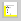
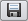

The detailed functioning of all sections, ranging from progress notes to past history, referral letters etc
is discussed in detail later. The default startup screen in the clinical section is a new general progress notes page. Note that if
the section requested by the button click is already in the workspace then the tab will switch to that section. If you can design icons
please feel free to donate your time to replace this terrible collection.
New General Progress Notes Page - Loads a new progress notes page, general notes only should go here.
Past History - enter details of the patients problems or health issues, past present, active, inactive
Requests - create request forms for anything you designate, e.g pathology, radiology, physiotherapy etc. see
Allocating Categories in the Other Contacts section
Referrals - type referrals to other providers e.g a specialist referral letter

Prescriptions - write prescriptions, currently only available to valid MIMS subscribers
Recalls - enter recalls and reminders for example pap smears, colonoscopies, annual checkups etc.
Review Progress Notes - shows all existing progress notes which you may filter according to problem if you wish
Care Plan Summary - displays the patients care plan
Print - prints the contents of the currently displayed section (if applicable)

Saves any outstanding data - note the F12 key will also call this function
In future releases the available buttons will be user configurable.